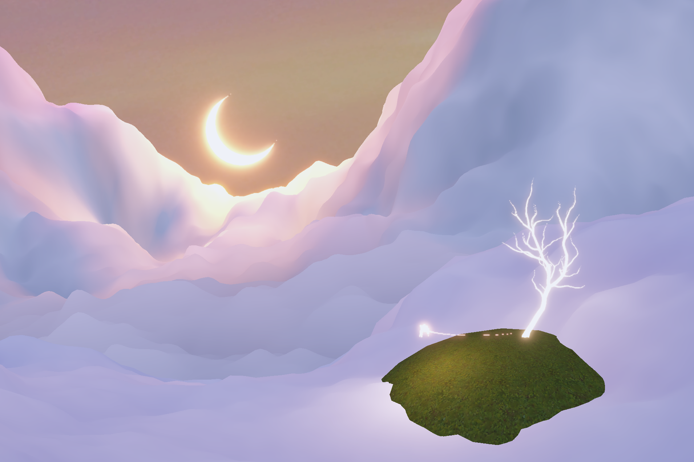
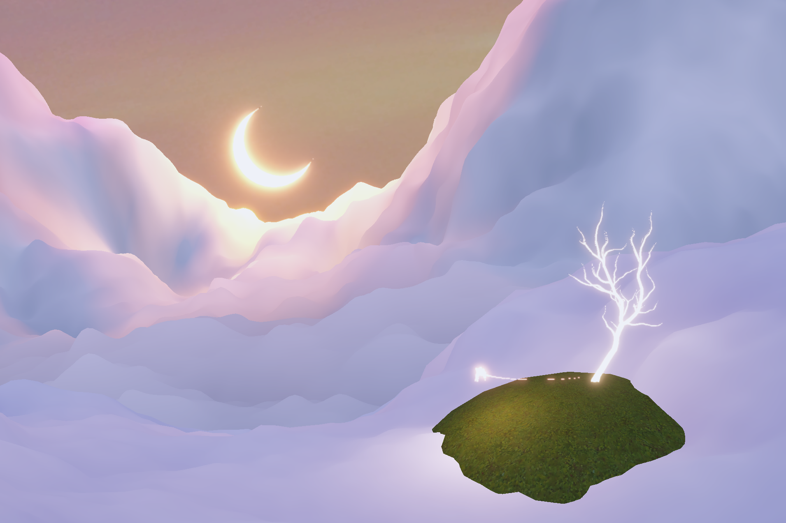

Owllight
Owllight is a rhythm game inspired by stories of nature, memory, and change, developed using Unity, Blender, C#, and Python.
Download for Windows and Mac: Owllight.rar
Owllight is a rhythm game inspired by stories of nature, memory, and change, developed using Unity, Blender, C#, and Python.
Download for Windows and Mac: Owllight.rar